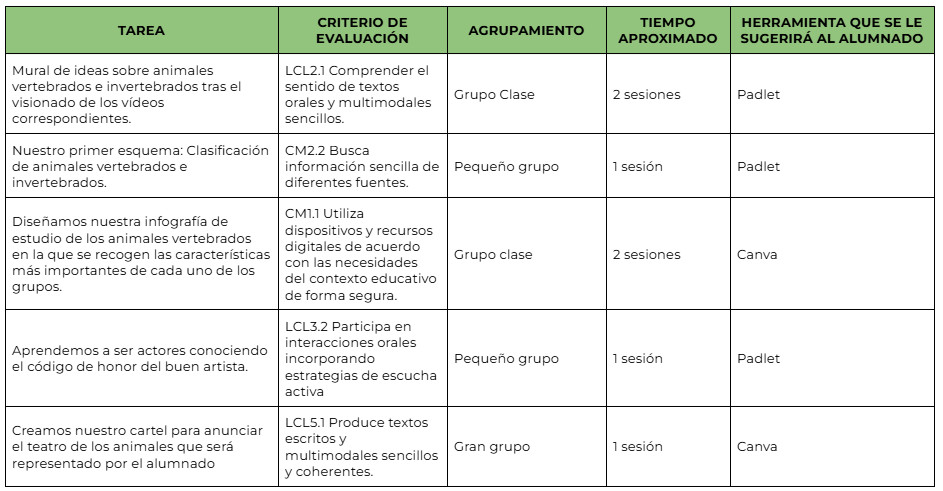

Guía didáctica.
Título de la Situación de Aprendizaje: El teatro de los animales.
Centro de interés: Los animales y su cuidado, un tema muy motivador para los niños.
Nivel: 2º de Educación Primaria.
Temporalización: Un mes (segunda quincena de mayo y primera de junio).
Materias implicadas: Conocimiento del Medio, Lengua Castellana y Literatura y Música.
Idioma: Castellano.
Descripción general
- Conocer el mundo de los animales y aprender a cuidarlos con responsabilidad.
- Trabajar el teatro como actividad motivadora y divertida.
- Mejorar la atención, la autoestima y el trabajo en equipo.
- Representar una obra teatral con una canción final en grupo junto al área de Música.
Justificación: Actividad interdisciplinar con diferentes experiencias de aprendizaje.
Producto final: representación de un teatro para otros compañeros.
Evaluación: Se realizarán pruebas orales y escritas sencillas.
Se trabajará la responsabilidad y la participación en el teatro.
Se atenderán posibles conflictos y preferencias de personajes.
Análisis: Fomento del trabajo en equipo y la ayuda entre compañeros.
Importancia del respeto, el compromiso y el esfuerzo común.
Necesidad de preparar en casa los papeles del teatro.
Conclusión: El teatro favorece un aprendizaje significativo y motivador.
Todos aprendemos juntos y compartimos experiencias enriquecedoras.
Relación de tareas con criterios de evaluación
